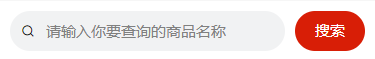

<input type="text" model:value='{{msg}}' />
<input type="text" model:value='{{obj.name}}' />
<input type="text" value='{{obj.name}}' bindinput="getName"/>
getName(e) {
this.setData({
'obj.name':e.detail.value
})
}

<view>
<view>
<text class="iconfont icon-search"></text>
<input type="text"
focus
placeholder="请输入你要查询的商品名称"
confirm-type="search"
bindconfirm="doQuery"
model:value='{{keywords}}' />
</view>
<button bind:tap="doQuery">搜索</button>
</view>
doQuery() {
let keywords = this.data.keywords
keywords = keywords.replace(/^\s+/, '');
keywords = keywords.replace(/\s+$/, '');
if (!keywords) {
wx.showToast({
title: '输入为空',
})
return
}
const results = products.filter(item => item.title.includes(keywords))
this.setData({
keywords,
results,
})
}
cur:1
<view>{{cur}}</view>
<swiper model:current="{{cur}}">
<swiper-item> 11 </swiper-item>
<swiper-item> 22 </swiper-item>
<swiper-item> 33 </swiper-item>
<swiper-item> 44 </swiper-item>
</swiper>
cur: 1
<scroll-view class="wrap" scroll-x scroll-with-animation model:scroll-into-view="id{{cur}}">
<view class="item" wx:for="{{10}}" wx:key="index" id="id{{index}}">{{item}}</view>
</scroll-view>
<swiper class="swiper-wrap" model:current="{{cur}}">
<swiper-item class="swiper-item" wx:for="{{10}}" wx:key="index">
{{item}}
</swiper-item>
</swiper>
<radio-group name="ugender">
<radio value="male" color="#ff4400" model:checked="{{user.ugender=='male'}}" />male
<radio value="female" color="#ff4400" model:checked="{{user.ugender=='female'}}"/>female
</radio-group>